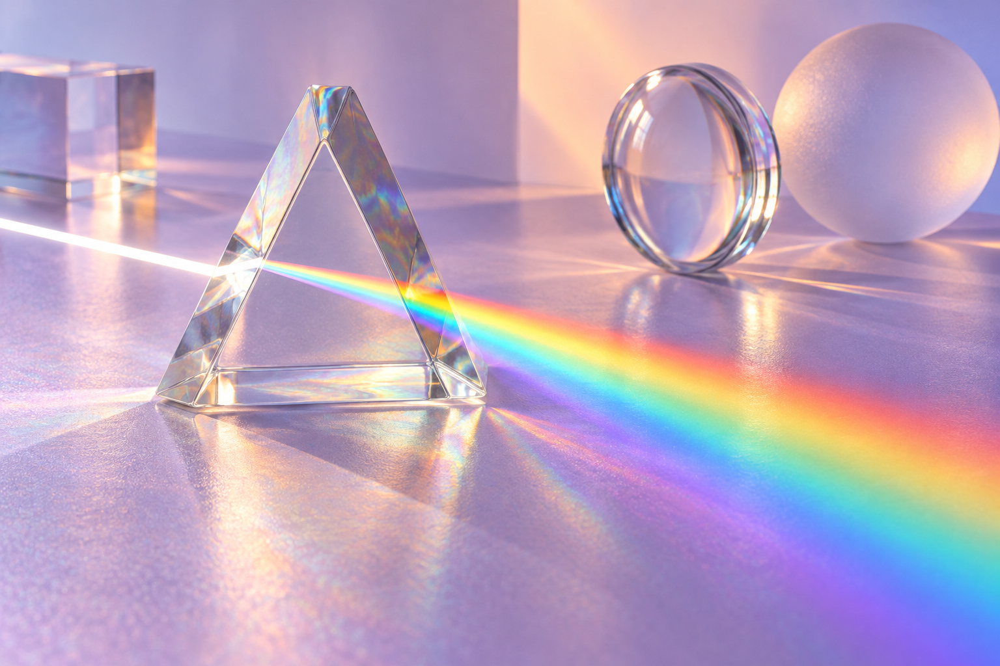

ДИВИСЬ УВАЖНІШЕ. СВІТ ДИВОВИЖНИЙ.
Побачити
невидиме.
Керуй променями, створюй зображення
та відкривай фізику світла навколо себе.
7 тем · інтерактивні досліди · твої відкриття

01 / МАРШРУТ ДОСЛІДНИКА
Сім способів подивитися на світ
Обирай тему — досліджуй у власному темпі.
02 / ЛАБОРАТОРІЯ СВІТЛА
ПЕРЕДБАЧ → ЗМІНИ → ПОЯСНИ
Спробуй дослідити
Пояснення для самоперевірки
НОВЕ / КОСМІЧНА ЛАБОРАТОРІЯ
Коли світло зустрічає тінь
Переміщуй Місяць і досліджуй взаємне розташування Сонця, Землі та Місяця.
Схема в перерізі: розміри тіл і відстані умовні. Темна область — повна тінь, світліша — півтінь.
Сонячне затемнення
Чому затемнення не щомісяця?
Орбіта Місяця нахилена до площини земної орбіти приблизно на 5°. Найчастіше Місяць проходить вище або нижче потрібної лінії. Затемнення можливе поблизу вузлів його орбіти.
Досліди й поясни
Вирівняй тіла, потім поступово зміщуй Місяць. Порівняй порядок тіл для двох видів затемнень. Чия тінь куди падає?
03 / СВІТЛОВИЙ ВИКЛИК
Злови промінь
Поверни дзеркало так, щоб відбитий промінь потрапив у приймач. Кут дзеркала відлічуємо від горизонталі.
Налаштуй напрям променя.
Один відбивач, три положення приймача. Закон відбиття працює в кожному рівні.
04 / ФІЗИКА ТВОГО ДНЯ
Знайомі речі. Нові пояснення.
05 / МАЙСТЕРНЯ
Думай. Будуй. Перевіряй.
Обери задачу
Підказка
Нотатки зберігаються лише в цьому браузері.
06 / КИШЕНЬКОВІ ЗНАННЯ
Пам’ятки, які завжди під рукою
Відкрий картку, щоб пригадати закон або формулу.
07 / МОЄ ВІДКРИТТЯ